정보통신산업기사 (2011-10-02 기출문제)
1과목: 디지털전자회로
1. 하틀레이 발진기에서 궤환 요소에 해당되는 것은?
- 콘덴서
- 저항
- 인덕터
- 능동소자
(정답률: 62%)

2. 다음 연산증폭기를 사용한 회로에서 출력파형은?
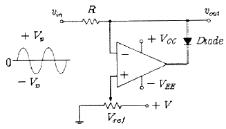
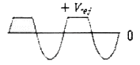
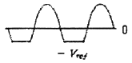
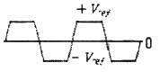
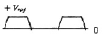
(정답률: 53%)
3. 다음과 같은 카르노 도표를 간략화한 것은?
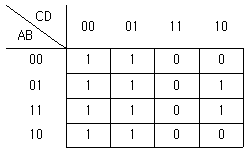
- A + BC
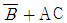
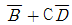
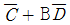
(정답률: 80%)
4. 시미트 트리거(schmitt trigger) 회로의 설명 중 옳지 않은 것은?
- 쌍안정 멀티바이브레이터의 일종이다.
- 구형파 발생기의 일종이다.
- 입력 전압의 크기로서 회로의 ON, OFF를 결정해 준다.
- 외부 클럭 펄스가 필요하다.
(정답률: 41%)
5. 주파수변조에서 다음 변조지수 중 대역폭이 가장 넓은 것은?
- 0.17
- 2.9
- 3.1
- 4.2
(정답률: 77%)
6. 다음 중 비동기식 카운터와 관계없는 것은?
- 고속계수 회로에 적합하다.
- 리플 카운터라고도 한다.
- 회로 설계가 동기식보다 비교적 용이하다.
- 전단의 출력이 다음 단의 트리거 입력이 된다.
(정답률: 68%)
7. 다음 중 그림에서 발진회로로 적합한 것은?
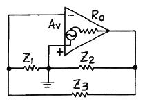
- Z1, Z2 : 유도성, Z3 : 용량성
- Z1, Z3 : 유도성, Z2 : 용량성
- Z2, Z3 : 유도성, Z1 : 용량성
- Z1, Z2, Z3 : 유도성
(정답률: 78%)
8. 다음 중 10진수 342를 BCD 코드로 변환하면?
- 0101 0100 0010
- 0011 0100 0011
- 0101 0101 0010
- 0011 0100 0010
(정답률: 78%)
9. 수정발진기는 그 발진주파수가 안정하여 널리 쓰이고 있다. 안정한 이유로서 가장 옳은 것은?
- 수정은 고유진동을 하고 있기 때문에
- 수정발진자는 온도계수가 적기 때문에
- 수정은 피에조 전기현상을 나타내기 때문에
- 수정발진자는 Q가 매우 높기 때문에
(정답률: 75%)
10. 변조도가 50[%]인 진폭변조 송신기에서 반송파의 평균전력이 40[mW]일 때, 피변조파의 평균전력[mW]은?(오류 신고가 접수된 문제입니다. 반드시 정답과 해설을 확인하시기 바랍니다.)
- 400
- 450
- 500
- 550
(정답률: 82%)
11. 기억된 정보를 보전하기 위하여 주기적으로 리플레시(refresh)를 해주어야만 하는 기억소자는?
- Dynamic ROM
- Static ROM
- Dynamic RAM
- Static RAM
(정답률: 73%)
12. 트랜지스터의 베이스접지 전류증폭률을 α라고 하면 이미터접지의 전류증폭률 β는?
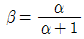
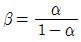
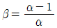
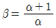
(정답률: 66%)
13. 주된 맥동전압주파수가 전원주파수의 6배가 되는 정류 방식은?
- 단파전파정류
- 단상브리지정류
- 3상반파정류
- 3상전파정류
(정답률: 64%)
14. 다음 중 회로에 구형파 입력 ei가 인가될 때 출력 eo의 파형으로 가장 적합한 것은? (단, RC ≪ tp이다.)
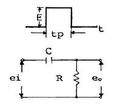
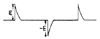
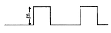
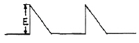
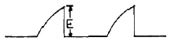
(정답률: 66%)
15. 그림과 같은 D형 플립플롭으로 구성된 카운터 회로의 명칭은?
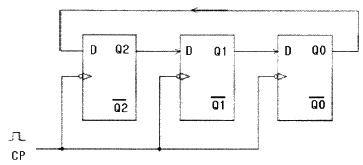
- 3진 링카운터
- 6진 링카운터
- 7진 시프트카운터
- 8진 시프트카운터
(정답률: 74%)
16. 2진수 (11010)2을 그레이코드(gray code)로 변환하면?
- (10011)G
- (11011)G
- (11110)G
- (10111)G
(정답률: 70%)
17. 신호의 표본값에 따라 펄스의 진폭을 일정하고 그 위상만 변화하는 것은?
- PCM
- PPM
- PWM
- PFM
(정답률: 70%)
18. 다음 그림과 같은 회로의 출력전압 Vo[V]는?
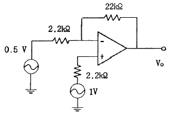
- 6
- -6
- 16
- -16
(정답률: 44%)
19. 전압증폭 이득이 40[dB]인 증폭기에서 10[%]의 잡음이 발생했다.
- 0.5
- 0.09
- 0.⑤
- 0.009
(정답률: 53%)
20. 다음 그림과 같은 궤환회로는? (단, 입력이 Vi이고 출력은 Vo이다.)
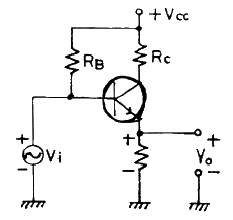
- Voltage series
- Current series
- Voltage shunt
- Current shunt
(정답률: 61%)
2과목: 정보통신기기
21. 전송제어장치에서 회선접속부의 기능에 대한 설명으로 옳은 것은?
- 모뎀의 인터페이스 제어
- 오류검출부호의 생성과 수신 데이터의 오류검출
- 송수신 데이터의 기억
- 컴퓨터와의 데이터 전송제어
(정답률: 42%)
22. 다음 중 마이크로파의 중계방식이 아닌 것은?
- 간접 중계방식
- 검파 중계방식
- 헤테로다인 중계방식
- 무급전 중계방식
(정답률: 36%)
23. 다음 중 FAX에서 동기가 필요한 주된 이유는?
- 소비전력을 절약하기 위해서
- 화상을 압축하기 위해서
- 화상을 실시간 전송하기 위해서
- 송신주사와 수신주사 속도를 일치시키기 위해서
(정답률: 70%)
24. DTE와 DCE를 상호 연결하기 위해 기계적, 전기적, 기능적, 절차적인 조건들을 표준화한 것은?
- 토폴로지
- DCE 아키텍처
- DTE/DCE 인터페이스
- 참조 모형
(정답률: 86%)
25. 모뎀의 기능 중에서 디지털신호가 "1"이나 "0"이 계속되는 것을 방지하는 것은?
- 스크램블 기능
- Timing 기능
- 등화 기능
- 테스트 기능
(정답률: 82%)
26. 이동통신에서 사용되는 안테나의 특성을 나타내는 3요소가 아닌 것은?
- 임피던스
- 송신전력
- 이득
- 지향성
(정답률: 49%)
27. FM 수신기에 사용되지 않는 것은?
- 디엠퍼시스 회로
- 스켈치 회로
- 주파수변별기 회로
- IDC 회로
(정답률: 46%)
28. 다음 중 CCTV 시스템의 기본 요소로 구성된 것은?
- 촬상장치, 전송장치, 화상처리장치
- 헤드엔드, 간선증폭기, 화상처리장치
- 헤드엔드, 전광변환장치, 화상처리장치
- 촬상장치, 간선분기증폭기, 화상처리장치
(정답률: 64%)
29. ATSC 방식의 영상신호 압축방식은?
- MPEG-1
- MPEG-2
- MPEG-3
- MPEG-4
(정답률: 61%)
30. 디지털 데이터를 디지털 신호로 전송하는 기능을 수행하는 것은?
- CODEC
- 변복조기
- DSU
- 터미널
(정답률: 74%)
31. 다음 중 지구국 시스템의 구성장치가 아닌 것은?
- 감시, 제어 장치
- 지상 통제 장치
- 상향 주파수 변환기
- 안테나 시스템
(정답률: 47%)
32. 무선통신에 사용되고 있는 확산 스펙트럼 방식이 아닌 것은?
- 델타변조 도약(DMH)
- 직접 확산(DS)
- 주파수 도약(FH)
- 시간 도약(TH)
(정답률: 36%)
33. 다음 중 전리층 반사파를 이용하여 원거리통신이 가능한 단파대(HF)에서 주로 사용되고 있는 통신방식은?
- SSB
- FM
- PM
- VSB
(정답률: 42%)
34. 위성 통신망에서 보다 효율적으로 채널을 사용하기 위한 채널의 선택방식으로 거리가 먼 것은?
- 고정 할당 방식
- 임의 할당 방식
- 정지 할당 방식
- 요구 할당 방식
(정답률: 39%)
35. 다음 중 FM 변조에서 주파수 편이가 일정한 한계를 넘지 않도록 자동적으로 제어하는 회로는?
- IDC 회로
- AVC 회로
- DAGC 회로
- AFC 회로
(정답률: 60%)
36. 다음 중 전리층의 제1종 감쇠에 대한 설명으로 거리가 먼 것은?
- 전리층을 투과할 때 받는 감쇠이다.
- 기압에 거의 반비례한다.
- 전자밀도에 비례한다.
- 주파수의 제곱에 반비례한다.
(정답률: 38%)
37. 다음 중 CATV 망을 설계하는데 있어서, 장거리에 걸쳐 분산되어 있는 다수의 가입자에게 가장 효율적인 형태는?
- Mesh형
- Star형
- Ring형
- Tree형
(정답률: 50%)
38. 다음 중 팩시밀리 장치의 수신 기록 방식으로 거리가 가장 먼 것은?
- 전해기록 방식
- 유도기록 방식
- 감열기록 방식
- 사진기록 방식
(정답률: 37%)
39. 다음 중 송ㆍ수신기용 발진기로서 적당하지 않은 것은?
- 고조파 발생이 적을 것
- 발진출력 변화가 적을 것
- 부하 변동에 의한 영향이 적을 것
- 주파수 안정도가 낮을 것
(정답률: 67%)
40. FM 변조에서 변조지수가 6이고 신호주파수가 3[kHz]일 때, 주파수 편이는?
- 6[kHz]
- 9[kHz]
- 18[kHz]
- 36[kHz]
(정답률: 75%)
3과목: 정보전송개론
41. 전송특성 열화요인으로 크게 정상 열화요인과 비정상 열화요인이 있다. 비정상 열화요인에 해당되지 않는 것은?
- 주파수 편차
- 펄스성 잡음
- 단시간 레벨변동
- 순간적 단절
(정답률: 41%)
42. 다음 중 프로토콜의 기능과 가장 거리가 먼 것은?
- 데이터 압축
- 다중화
- 연결제어
- 캡슐화와 비캡슐화
(정답률: 30%)
43. 지터(Jitter)에 대한 설명으로 적합하지 않은 것은?
- 타이밍 편차라고도 한다.
- 펄스열이 왜곡되어 타이밍펄스가 흔들려서 발생한다.
- 타이밍회로의 동조가 부정확하여 발생한다.
- 재생중계에 의해 제거되므로 누적되지 않는 잡음이다.
(정답률: 68%)
44. 부호화된 디지털 신호를 아날로그 전송신호로 변조하는 이유가 아닌 것은?
- 광전송을 하기 위해서
- 위성을 이용한 무선 정손을 위해서
- 기존의 아날로그 장비를 사용하기 위해서
- 디지털 전송 방식보다 아날로그 전송방식이 좋기 때문
(정답률: 59%)
45. 다음이 설명하고 있는 ARQ 방식은?
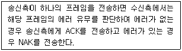
- Stop-and-wait ARQ
- Go-Back-N ARQ
- Selective Repeat ARQ
- Adaptive ARQ
(정답률: 49%)
46. 수신된 BPSK 신호는 반송파 성분이 없기 때문에 복조하기 위해 반송파 신호를 발생시킨다. 발생된 반송파의 위상은 두 개의 위상 중 어느 하나에 Locking되며, Detector Mixer는 수신 BPSK 신호와 반송파를 곱해 데이터를 복조하게 된다. 이러한 역할을 하는 회로를 무엇이라 하는가?
- Polybinary
- Costas loop
- Phase lock loop
- Phase ambiguity
(정답률: 46%)
47. 광섬유 케이블의 특징으로 틀린 것은?
- 경량성이다.
- 전자유도의 영향이 없다.
- 대용량 전송이 가능하다.
- 차폐용 동 테이프를 사용하여 누화가 없다.
(정답률: 64%)
48. 채널에서 발생하는 잡음을 수신측에서 오류로 제어할 수 있도록 조작하는 과정은?
- 소스코딩
- 채널코딩
- 엔트로피
- 채널용량
(정답률: 63%)
49. 7비트 해밍코드 1111101(D7 D6 D5 P4 D3 P2 P1)이 수신되었을 때 정확한 전송비트는?
- 1110101
- 1010101
- 1111110
- 1111111
(정답률: 36%)
50. 채널 대역폭이 150[kHz]이고 S/W이 15일 때, 채널용량은 몇 [kbps]인가?
- 150
- 300
- 450
- 600
(정답률: 55%)
51. 비동기식 변복조기에서 널리 사용되며 대체로 2000[bps]이하의 전송시에 주로 사용되는 변복조방식은?
- ASK
- PSK
- FSK
- QAM
(정답률: 43%)
52. FEC(Forward Error Correction) 코드에 포함되지 않는 것은?
- 해밍 코드
- CRC 방식
- BCH 코드
- 패리티 코드
(정답률: 32%)
53. 다음 중 가청주파수(20[Hz]~20[kHz]) 대역의 음악을 PCM 방식으로 변환하기 위한 최소 표본화 주파수[kHz]로 적합한 것은?
- 11
- 22
- 44
- 66
(정답률: 55%)
54. 다음 중 PCM 방식의 송신측 과정으로 적합한 것은?
- 압축 → 양자화 → 표본화 → 부호화 → 전송
- 부호화 → 표본화 → 양자화 → 압축 → 전송
- 표본화 → 압축 → 양자화 → 부호화 → 전송
- 양자화 → 표본화 → 부호화 → 압축 → 전송
(정답률: 73%)
55. 다음 중 광통신용 발광 소자는?
- LD
- PD
- APD
- LAP
(정답률: 75%)
56. PCM 과정 중 어느 단계에서 2진 부호로 변환되는가?
- 표본화
- 양자화
- 부호화
- 복호화
(정답률: 61%)
57. 진공 중에서 광속도와 전자파속도를 비교한 설명 중 맞는 것은?
- 광속도와 전자파속도는 같다.
- 광속도가 더 빠르다.
- 전자파속도가 더 빠르다.
- 속도가 불규칙하여 비교할 수 없다.
(정답률: 45%)
58. 오류 발생 유ㆍ무만을 판정하는 오류검출 코드는?
- 순환 중복검사(CRC) 코드
- 블록 패리티검사 코드
- 수평 중복검사 코드
- 패리티검사 코드
(정답률: 28%)
59. 다음 중 전송로의 진폭왜곡이나 위상왜곡에 의해 발생하는 부호간 간섭(ISI)의 영향을 감소시키는 장치는?
- 증폭기
- 등화기
- 정합필터
- 재생중계기
(정답률: 43%)
60. 4상 PSK에서 변조속도가 1200보오(baud)일 때, 데이터 신호 속도는 몇 [bps]인가?
- 1200[bps]
- 2400[bps]
- 4800[bps]
- 7200[bps]
(정답률: 62%)
4과목: 전자계산기일반 및 정보설비기준
61. Unary 연산인 것은?
- MOVE
- AND
- OR
- XOR
(정답률: 51%)
62. 다음 불대수 공식 중 틀린 것은?
- X + 0 = 0
- X + X = X
- X ·
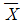
= 0 - X · X = X
(정답률: 56%)
63. 정보를 기억장치에 기억 또는 읽어내는 명령을 한 후부터 실제의 정보가 기억 또는 읽기 시작할 때까지의 소요시간은?
- Access time
- Idle time
- Run time
- Seek time
(정답률: 74%)
64. JK 플립플롭에서 J=0, K=1로 입력될 때 플립플롭은?
- 먼저 내용에 대한 complement로 된다.
- 먼저 내용이 그대로 남는다.
- 0으로 변한다.
- 1로 변한다.
(정답률: 63%)
65. 프로그램 개발 과정에서 논리적 오류를 발견하고 수정하는 작업은?
- 링킹(linking)
- 코딩(coding)
- 로딩(loading)
- 디버깅(debugging)
(정답률: 71%)
66. 다음 중 자기보수(Self Complement) 코드의 종류가 아닌 것은?
- 그레이 코드
- 3-초과 코드
- 2421 코드
- 842 1 코드
(정답률: 45%)
67. 다음 중 CPU에 인터럽트가 발생할 때의 OS 동작 설명으로 옳지 않은 것은?
- 수행중인 프로세스나 스레드의 상태를 저장한다.
- 인터럽트 종류를 식별한다.
- 인터럽트 서비스 루틴을 호출한다.
- 인터럽트 처리 결과를 텍스트 형식의 파일로 저장한다.
(정답률: 62%)
68. ROM과 RAM의 차이점을 설명한 것으로 틀린 것은?
- RAM은 휘발성 메모리라고 한다.
- 어느 ROM이나 한 번 쓰면 지울 수 없다.
- RAM은 동적 RAM과 정적 RAM으로 나눌 수 있다.
- ROM의 종류에는 EPROM, EEPROM, PROM 등이 있다.
(정답률: 75%)
69. 오퍼랜드가 존재하는 기억장치 주소를 내용으로 가지고 있는 기억장소의 주소를 명령 속에 포함시켜 지정하는 방식은?
- relative addressing mode
- indirect addressing mode
- page addressing mode
- index addressing mode
(정답률: 42%)
70. 서브루틴의 호출에 이용되는 자료구조는?
- 큐(queue)
- 스택(stack)
- 배열(array)
- 리스트(list)
(정답률: 55%)
71. 다음 ( ) 안에 들어갈 내용으로 적합한 것은?
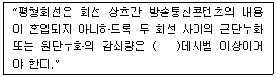
- 50
- 55
- 60
- 68
(정답률: 75%)
72. 다음 중 시ㆍ도지사가 반드시 정보통신공사업 등록을 취소하여야 하는 것은?
- 영업정지처분을 위반할 때
- 등록의 기준에 미달하게 된 때
- 폐업신고를 허위로 신고한 때
- 시정명령 또는 지시에 위반한 때
(정답률: 56%)
73. 공사업자가 품위 유지, 기술 향상, 공사시공 방법 개량, 그밖에 공사업의 건전한 발전을 위하여 방송통신위원회의 인가를 받아 설립한 것은?
- 정보통신공사협회
- 한국정보화진흥원
- 한국정보기술협회
- 한국정보통신산업협회
(정답률: 65%)
74. 사업자의 교환설비로부터 이용자 방송통신설비의 최초 단자에 이르기까지의 사이에 구성하는 회선은?
- 내선
- 전송회선
- 통신채널
- 국선
(정답률: 73%)
75. 다음 ( ) 안에 들어갈 내용으로 가장 적합한 것은?
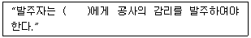
- 공사업자
- 감리업자
- 용역업자
- 도급업자
(정답률: 59%)
76. 전기통신서비스에 관하여 그 서비스별로 요금 및 이용조건을 정한 내용은?
- 통신규약
- 이용약관
- 기술기준
- 가입청약
(정답률: 58%)
77. 통신ㆍ방송ㆍ인터넷이 융합된 멀티미디어 서비스를 언제어디서나 고속ㆍ대용량으로 이용할 수 있는 정보통신망은?
- 초고속 정보통신망
- 초고속 방송통신망
- 광대역방송통신망
- 광대역통합정보통신망
(정답률: 61%)
78. 정보통신공사업자와 감리업자가 해당 공사에 관하여 공사와 감리를 함께 할 수 있는 경우는?
- 민법에 따른 친족관계인 경우
- 동창관계인 경우
- 대통령령으로 정하는 모회사와 자회사의 관계인 경우
- 법인과 그 법인의 임직원의 관계인 경우
(정답률: 45%)
79. “실시간으로 동영상정보를 주고받을 수 있는 고속ㆍ대용량의 정보통신망”으로 정의되는 것은?
- 정보통신망
- 전기통신망
- 초고속정보통신망
- 광대역통합정보통신망
(정답률: 39%)
80. 다음 ( ) 안에 들어갈 내용으로 가장 적합한 것은?
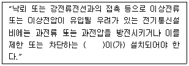
- 접지선
- 차단기
- 개폐기
- 보호기
(정답률: 64%)